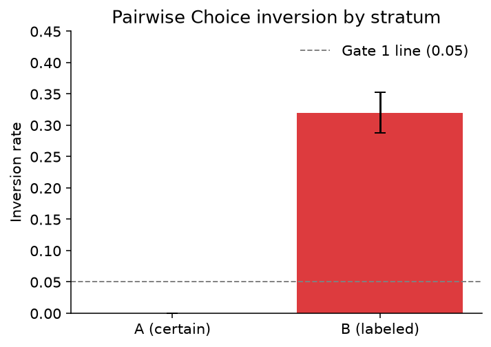
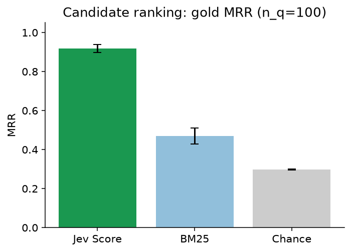
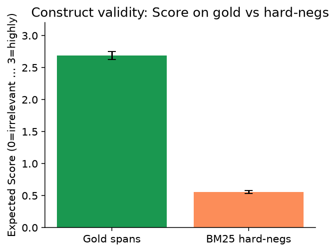
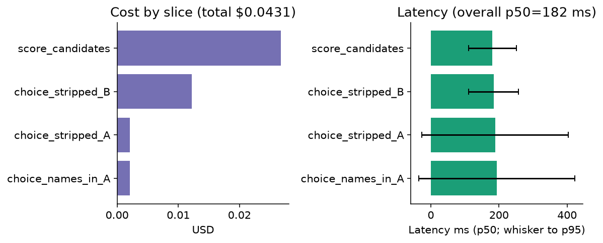

run_id: cuad-jev-2026-09-20
criterion (exact, never paraphrase): more relevant to the requested contract category
model: jev-1.13.0 (requested jev-latest)
pricing: Jev $0.042 / MTok input; output free
labels: CUAD human span annotations only — never from Jev
design: Design A (Stratum A certain pairs + Stratum B labeled pairs) + candidate-score lite (Gate 3/4)
Artifacts: results/gates.json · results/cost.json · results/timing.json · results/data_stats.json · results/accuracy_summary.json · results/baseline_literature.json
This report evaluates TypeSafe/Jev judgments of contract-clause relevance on the open CUAD corpus (Atticus Project, CC BY 4.0). The measurement question is whether pairwise Choice and graded Score judgments under the frozen criterion above recover human-annotated category spans relative to hard negatives and BM25 baselines, without using the judge to construct labels. Gate 7 cites published extractive DeBERTa-xlarge numbers as a literature difficulty anchor only; this bench does not re-run DeBERTa and uses a different task shape (candidate Score vs extractive QA).
data/pairs/gold_pairs.jsonl before any live Jev call; mtime order documented below.| # | Gate | Metric / rule | Pass line |
|---|---|---|---|
| 1 | Easy-pair inversion | Stratum A (n=40); average both presentation orders | inversion ≤ 0.05 PASS/FAIL |
| 2 | Labeled-pair inversion + Brier | Stratum B (n≤200); p(gold) | report |
| 3 | Candidate Score vs BM25 | n_q=100; gold MRR and Recall@1/@3/@5 | signal: Jev MRR > BM25 MRR |
| 4 | Construct validity | mean Score(gold spans) > mean Score(BM25 hard-negs), with STE | inequality + STE |
| 5 | Secondary calibration | Brier / ECE on Stratum B p(gold) | report |
| 6 | Name/meta ablation | Stratum A re-run with party names/dates left in; Δ inversion | Δ ≤ 0.05 PASS/FAIL |
| 7 | Literature DeBERTa baseline | Published CUAD DeBERTa-xlarge AUPR / P@R / Jaccard | report only — not a re-run |
more relevant to the requested contract categoryirrelevant / weakly relevant / relevant / highly relevant to the category description; expected score = Σ i·p_i (0-indexed)score.py → runs/jev/; every answer logs tokens + latency_msruns/jev/cache/| Event | Path | Status |
|---|---|---|
| Gates pre-registered | REPORT.md (this file) | DONE 2026-09-20 17:30:16 EDT (before any Jev call) |
| Gold pairs frozen | data/pairs/gold_pairs.jsonl | DONE 2026-09-20 17:32:37 EDT |
| PAIR_MANIFEST | data/pairs/PAIR_MANIFEST.md | DONE |
| Preflight cost | results/preflight_cost.json | DONE est $0.050 |
| First live Jev call | runs/jev/answers.jsonl | after gold freeze (score_start > gold mtime) |
| # | Gate | Result | Detail (with STE where defined) |
|---|---|---|---|
| 1 | Easy-pair inversion | PASS | 0.0000 (n=40, STE=0.0000); inverted: none |
| 2 | Labeled-pair inversion + Brier | report | inv=0.3200 STE=0.0324; Brier=0.2495 STE=0.0257; mean p(gold)=0.6757 (n=200) |
| 3 | Candidate Score vs BM25 | PASS_SIGNAL | Jev MRR=0.917 STE=0.021; BM25 MRR=0.469; chance=0.298; R@1/@3/@5 Jev=0.86/0.97/0.99 vs BM25=0.35/0.51/0.57 |
| 4 | Construct validity | PASS | gold mean Score=2.685 STE=0.062 (n=100) > neg=0.555 STE=0.027 (n=882); gap=2.130 STE=0.067 |
| 5 | Secondary Brier / ECE | report | Brier=0.2495 STE=0.0258; ECE=0.3243 (n=200) |
| 6 | Name/meta ablation | PASS | stripped inv=0.0000; names-in inv=0.0000; Δ=0.0000 |
| 7 | Literature DeBERTa | report | AUPR 47.8; P@80R 44.0; P@90R 17.8 (Hendrycks et al. 2021). Not re-run. Different task shape. |
| Stratum | n | inverted | inversion (STE) | mean p(gold) | mean Brier (STE) | order-flip |
|---|---|---|---|---|---|---|
| A certain | 40 | 0 | 0.0000 (0.0000) | 0.9761 | 0.0065 (0.0036) | 0.0000 |
| B labeled | 200 | 64 | 0.3200 (0.0324) | 0.6757 | 0.2495 (0.0257) | 0.0750 |
Inverted A: none.




Captions: results/figures/CAPTIONS.md.
| Slice | calls | cache hits | input tok | USD |
|---|---|---|---|---|
choice_names_in_A | 80 | 0 | 49856 | $0.002094 |
choice_stripped_A | 80 | 0 | 48928 | $0.002055 |
choice_stripped_B | 400 | 2 | 291158 | $0.012229 |
score_candidates | 982 | 0 | 637421 | $0.026772 |
| total | 1542 | 2 | 1027363 | $0.043149 |
Overall latency: mean 191.1 ms · p50 182 ms · p95 258 ms.
First live responses resolved jev-latest → jev-1.13.0.
---
*Gates were written before any Jev API call for run_id cuad-jev-2026-09-20.*
cuad-jev-bench · run_id cuad-jev-2026-09-20 · CUAD CC BY 4.0 · code MIT